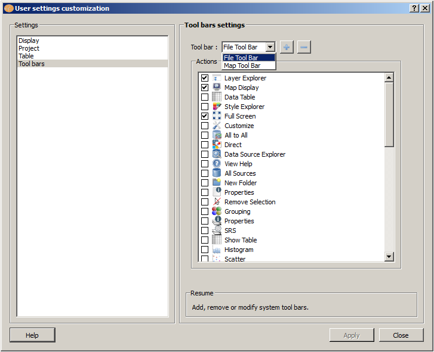
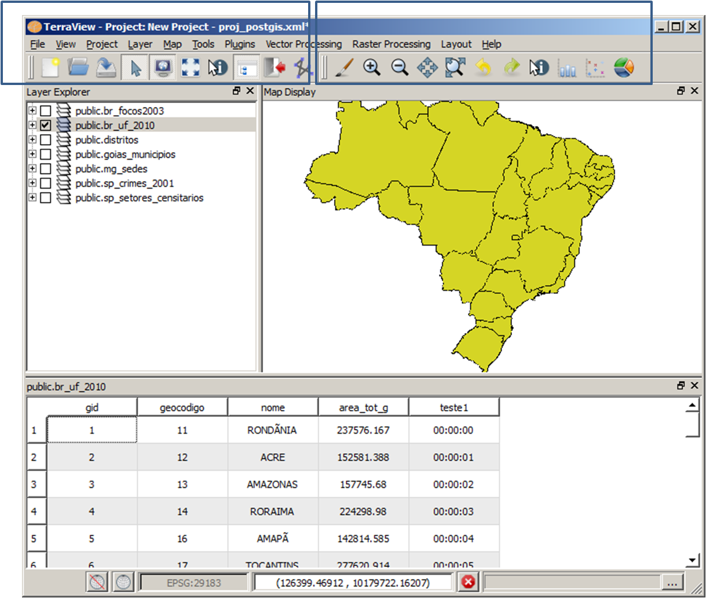

The Tool Bar Configurations Settings
is used to change the default configurations of the tool
bar. At this example there are two tool bars defined (named
File Tool Bar and Map Tool Bar) and the Actions selected for each of them are showed togheter at the main window.

To see the Tool Bar Names right click over an empty area at the Tool Bar. Observe that the Tool Bar Name do not appear at the main window. It is only a name to be referenced at the interface above.

After that it is possible to add or remove the availables icons which represent Actions.